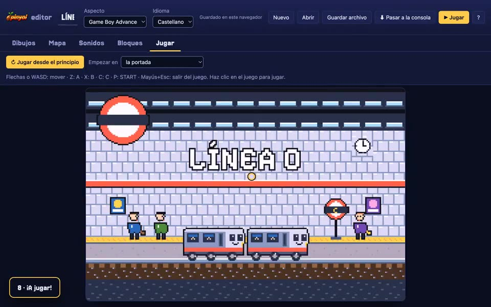

Free game engine · ESP32-S3
One engine, twelve eras
 makes games that look like 80s and 90s consoles and runs them at 60 fps on a handheld console built on an ESP32‑S3. Tell your coding agent the look you want and it builds the game. You can play them all here.
makes games that look like 80s and 90s consoles and runs them at 60 fps on a handheld console built on an ESP32‑S3. Tell your coding agent the look you want and it builds the game. You can play them all here.
Freenove FNK0104N · 480×320 · 60 fps on the board
Cover of the week
The sections

Play
The player with every game: pick one or open your own.

Library
The games people make with pinyol, and the ranking of the most voted.

Make
Twelve console looks to start from, your coding agent or the editor, no coding.

The console
The Cirera, its firmware and the app to play on your computer, with Mac, Windows or Linux.
Six to start with
Six of the twelve looks, to play right now in the browser. The fps figures were measured playing on the real console.
-
1990 · huge fighters
Neo Geo
One-on-one fighting on a pier at sunset.
- 60–61 fps on the console
- AI-generated art
-

1993 · fifteen colours per fighter
CPS2
Fighting on a perspective floor drawn in bands.
- 60–61 fps on the console
- AI-generated art
-

1989 · four greens, full screen
Game Boy
A platformer in the Game Boy's palette, full screen.
- 58–61 fps on the console
- drawn with code
-

1982 · two colours per block
ZX Spectrum
Complete with tape loading, coloured stripes and all.
- 41–62 fps on the console
- drawn with code
-

1997 · 256 colours, translucent lights
PlayStation · Saturn 2D
A castle at night: glowing candles and a see-through ghost.
- 60–61 fps on the console
- AI-generated art
-

2001 · layers, sprites, rippling water
Game Boy Advance
Parallax mountains, see-through water and coins.
- 61 fps on the console
- drawn with code
Most voted
The most voted games. You vote with a reaction on each game's page; the numbers are updated once a day.
The ranking needs JavaScript to load.